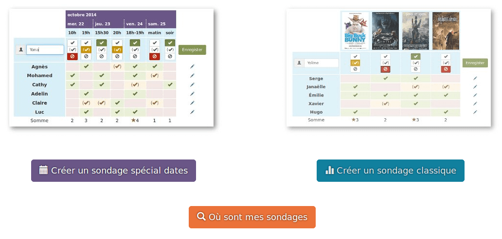
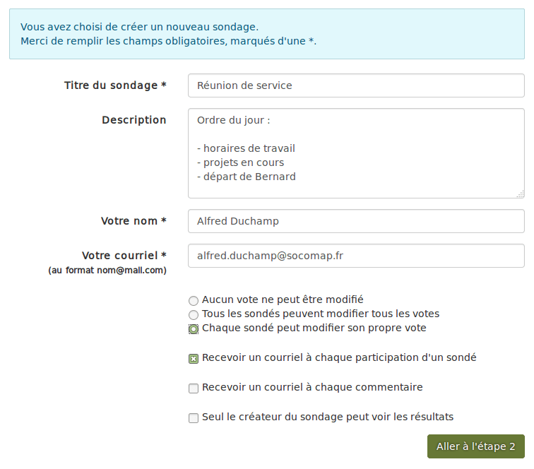
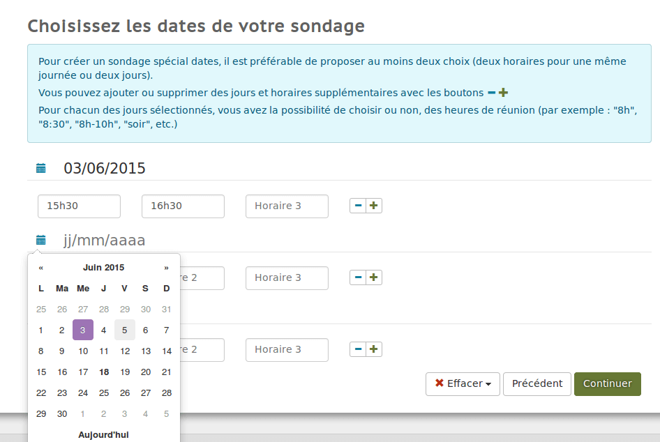
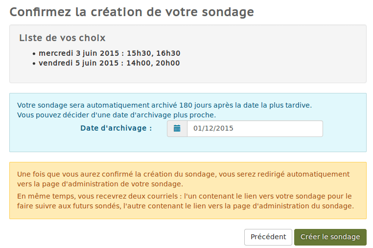
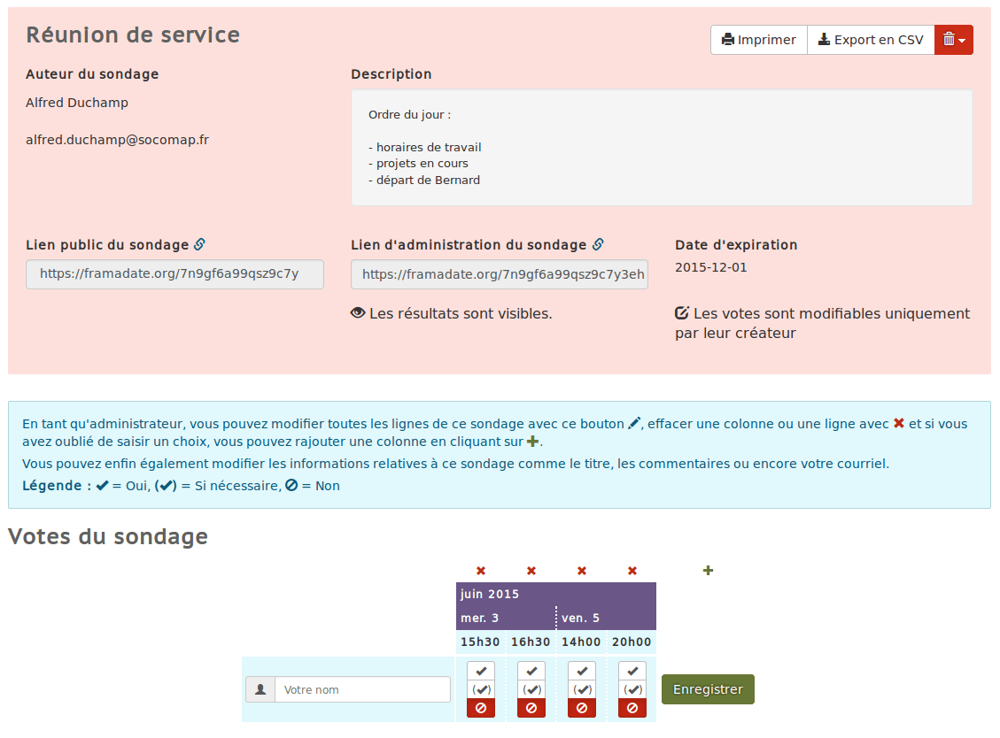
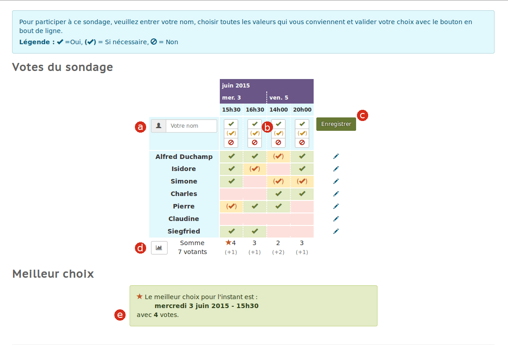

Planifier un rendez-vous rapidement avec Date #
0. Ouverture #

Pour créer un nouveau sondage, rendez-vous sur https://date.pcet.link.
Puis cliquez sur
Notez que vous pourrez retrouver tous vos sondages en cliquant sur « Où sont mes sondages ». Il suffira alors de renseigner votre adresse courriel.
1. Configuration #

Remplissez le formulaire de présentation du sondage,
Votre adresse courriel ne sera utilisée que pour communiquer les informations relatives au sondage (aucune donnée n’est transmise à un tiers, tout est confidentiel !).
Cases à cocher : choisissez parmi les options proposées. Astuce : recevoir un courriel à chaque fois qu’un sondé remplit une ligne est utile pour suivre l’avancée du sondage.

Définissez les dates du sondage en utilisant le menu contextuel affichant un calendrier, puis affinez vos dates en entrant des horaires. Les boutons + et – vous permettent d’ajouter autant de champs que nécessaire.
Notez le bouton suivant qui, une fois définis les horaires pour une première date, vous permet de cloner ces horaires, si besoin.

Dans le récapitulatif de votre sondage, vous pouvez préciser vous-même une date de suppression automatique du sondage.
Vous pouvez alors valider la création de votre sondage
2. Administration #

Après la création du sondage, vous accédez directement à son interface d’administration. Ces données vous sont envoyées par courriel avec 2 adresses :
- le lien public du sondage à faire parvenir à vos correspondant·e·s,
- le lien d’administration à conserver pendant la durée du sondage.
Si besoin, vous pouvez d’ores et déjà accomplir votre propre participation au sondage ou indiquer vous-même la participation d’une personne.
Notez que depuis l’interface d’administration vous pourrez exporter les résultats du sondage en .csv (à ouvrir avec un tableur comme Excel ou LibreOffice Calc).
Pour cela, cliquez sur le bouton
3. Procédure de votation #

- Indiquer son nom.
- Pour chaque champ, choisir « oui », « si nécessaire » ou « non » (par défaut).
- Enregistrer ses choix.
- Il est possible de visualiser les résultats du sondage sous forme graphique.
- À chaque vote validé, les résultats du sondage sont actualisés.